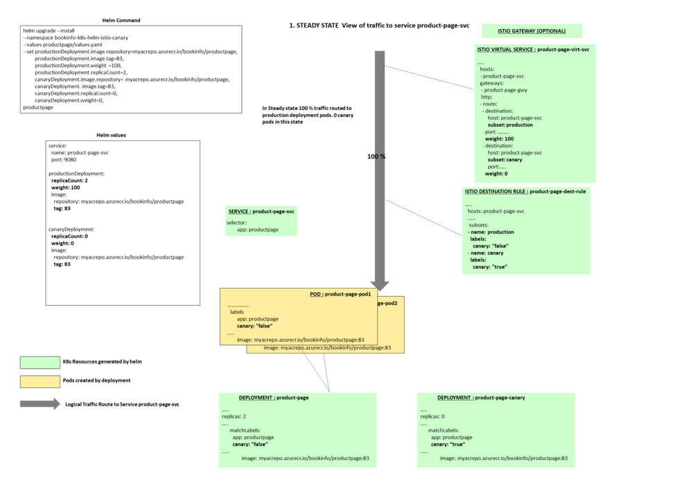
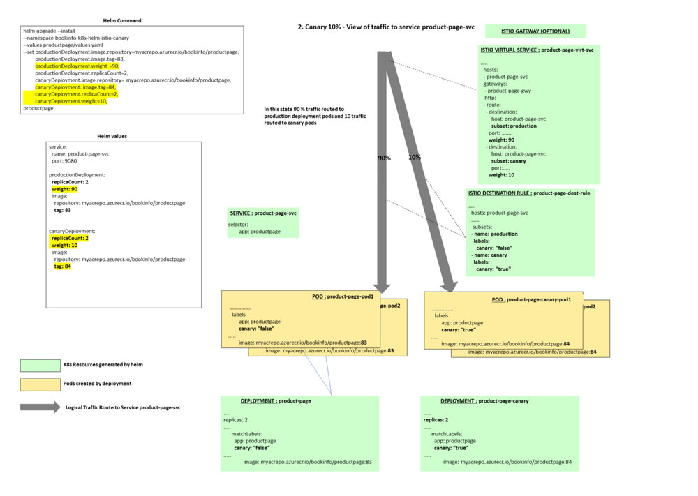
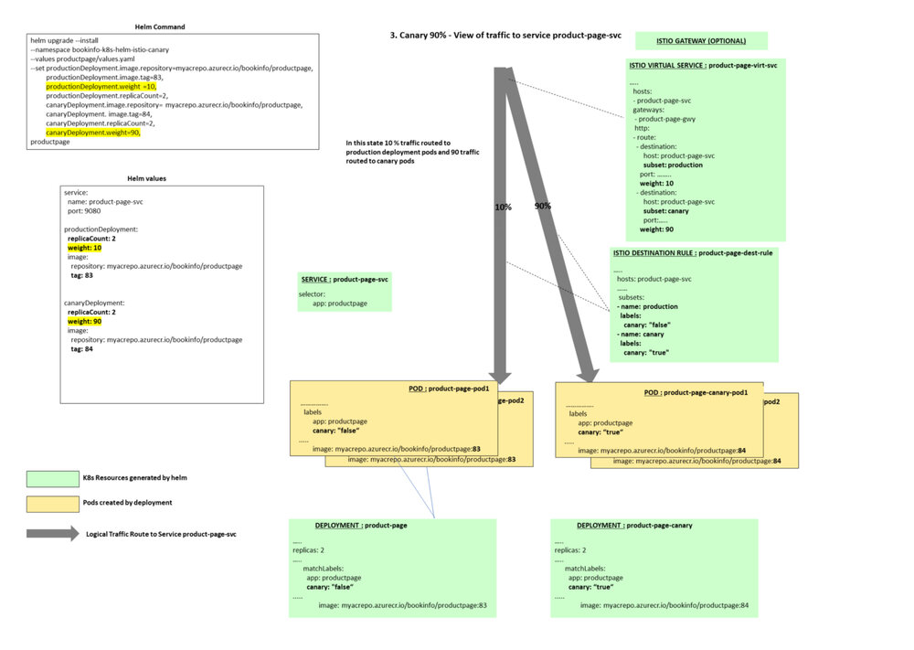
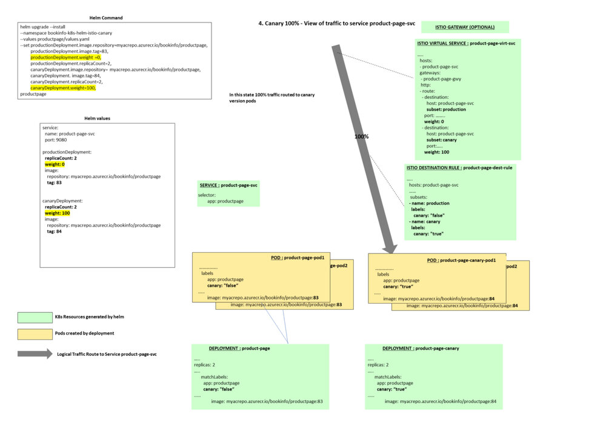
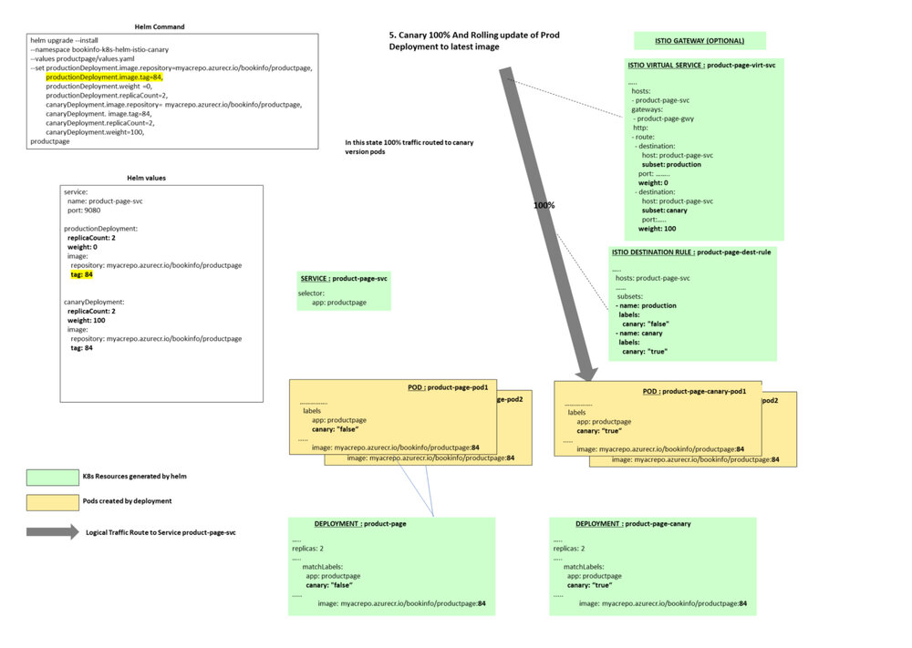
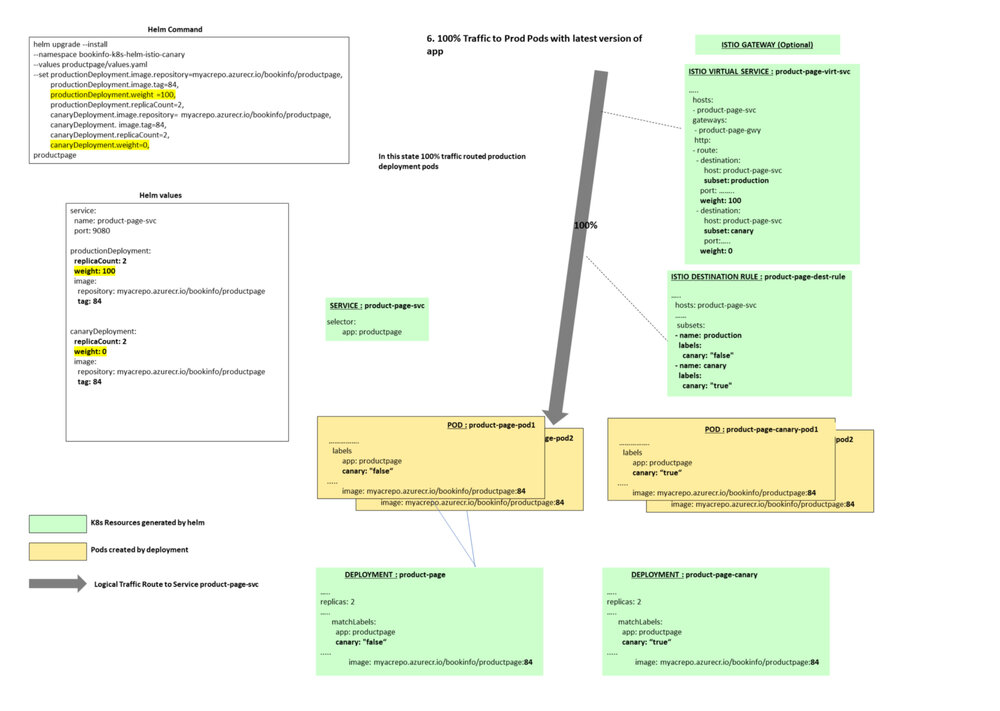
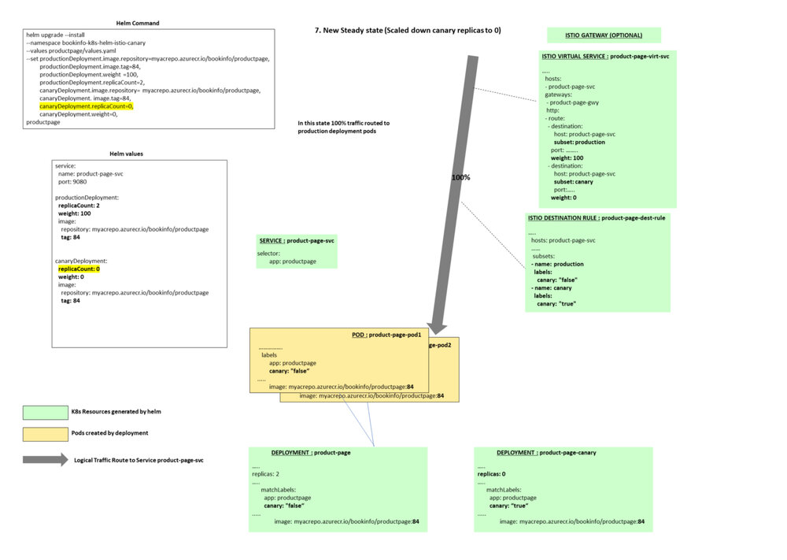

本文为翻译文章，点击查看原文。
编者按
本文阐述了如何使用Helm和Istio实现手动金丝雀发布。
我近期工作的项目目标是为微服务应用的金丝雀/分阶段发布制定一套流水线。而这些微服务被部署在Azure Kubernetes集群上（AKS）。
本文假设您熟悉Kubernetes，Helm和Istio流量管理。
这篇文章描述了发布的基本要求，为这些要求选择的发布策略，以及每个阶段实现细节。
在后面的文章中，我将详细介绍本文中描述的发布阶段如何对应到Azure DevOps 发布流水线。
关键要求
高级要求是将应用程序服务通过金丝雀版本发布到生产环境中。
基本要求/限制：
-
每个Micro服务都应打包为单独的Helm图表。
-
不同的团队管理不同的微服务，每个团队应该能够独立于其他微服务发布。
-
服务网格Istio安装在Kubernetes集群上
-
在项目的初始阶段，只有Helm和Istio可用于集群。在此阶段，不使用类似flagger这样的工具。
-
团队可以使用Helm chart分阶段的发布新版本应用程序：
- **10％**的流量路由到新版本
- **90％**的流量路由到新版本
- **100％**的流量路由到新版本
-
在每个阶段之后，需要手动判断以进入下一个发布阶段
-
每个阶段都可以使用Helm chart回滚到前一个生产版本
发布微服务资源
每个微服务都需要如下Kubernetes资源：
-
当前版本deployment，在新版本发布之前稳定运行的版本，承载100%的流量。
-
金丝雀deployment，在发布之前是0个实例，不承载流量。当发布时，承载流量会逐步增至10%、90%、100%。
-
service，与微服务当前deployment对应
-
Istio Virtual Service，用于控制当前deployment和金丝雀deployment流量分配的权重
-
Istio Destination Rule，包含当前deployment和金丝雀deployment的子集（subset）
-
Istio Gateway（可选），如果服务需要从容器集群外被访问则需要搭建gateway
列出上述资源，有助于我们理解第一章的实现细节。
查看GitHub仓库
这个仓库包含上述微服务的样例代码，Dockerfile，Helm chart以及每个阶段执行的Helm命令。同时，仓库还包含了由Helm Chart的helm template命令生成的Kubernetes示例资源。
使用的示例服务是Istio产品页面应用程序，应用程序代码和docker文件来自Istio GitHub仓库。
仓库结构
- 产品页面应用的源码
- 应用容器的Dockerfile
- Helm Chart文件夹包含Kubernetes和Istio资源
- helm-commands.sh，包含各阶段helm命令（rollback命令、helm template命令）
- helm-template-output.yaml，包含由helm template命令生成的Kubernetes示例资源
关键内容
Helm Values
让我们看下Helm values文件：
service:
name: product-page-svc
port: 9080
productionDeployment:
replicaCount: 2
weight: 100
image:
repository: myacrepo.azurecr.io/bookinfo/productpage
tag: 83
pullPolicy: IfNotPresent
canaryDeployment:
replicaCount: 0
weight: 0
image:
repository: myacrepo.azurecr.io/bookinfo/productpage
tag: 83
pullPolicy: IfNotPresent
service部分包含了service名称。生产部署包含了副本数量、路由转发权重、容器镜像仓库名称、以及镜像tag。它跟金丝雀部署有一点类似。上面的值表示当处于稳定状态时，100%的流量被路由转发到现有生产版本Pod。而金丝雀版本则被设置为0副本，并且与生产版本使用相同镜像。当使用金丝雀发布时，金丝雀版本将被设置为使用新版本镜像。
在这个案例中，容器镜像打tag策略是使用对应的build id，然后把它推送到镜像仓库。所以如果应用程序的新版本被触发构建，则下一个版本容器镜像tag为84（83+1）。
我们也可以选择其他适合的镜像tag策略。
生产版本以及金丝雀版本Deployment文件
生产版本Deployment文件
apiVersion: apps/v1beta2
kind: Deployment
metadata:
name: productpage
labels:
app: productpage
canary: "false"
spec:
replicas: 2
selector:
matchLabels:
app: productpage
canary: "false"
template:
metadata:
labels:
app: productpage
canary: "false"
spec:
containers:
- name: productpage
image: "myacrepo.azurecr.io/bookinfo-canary/productpage:83"
imagePullPolicy: IfNotPresent
ports:
- name: http
containerPort: 9080
protocol: TCP
....
金丝雀版本Deployment文件
apiVersion: apps/v1beta2
kind: Deployment
metadata:
name: productpagecanary
labels:
app: productpage
canary: "true"
chart: productpage-0.1.0
spec:
replicas: 0
selector:
matchLabels:
app: productpage
canary: "true"
template:
metadata:
labels:
app: productpage
canary: "true"
spec:
containers:
- name: productpagecanary
image: "myacrepo.azurecr.io/bookinfo-canary/productpage:83"
imagePullPolicy: IfNotPresent
ports:
- name: http
containerPort: 9080
protocol: TCP
.....
两个Deployment文件的关键区别在于，生产版本canary标签的值为false，而金丝雀版本canary标签的值为true。另一个区别是在稳定状态下，金丝雀版本副本实例数量为0，所以不会运行任何金丝雀版本的pod。
Kubernetes Service
apiVersion: v1
kind: Service
metadata:
name: product-page-svc
spec:
ports:
- port: 9080
targetPort: http
protocol: TCP
name: http
selector:
app: productpage
......
Istio Destination Rule
apiVersion: networking.istio.io/v1alpha3
kind: DestinationRule
.........
spec:
host: product-page-svc.bookinfo-k8s-helm-istio-canary.svc.cluster.local
.......
subsets:
- name: production
labels:
canary: "false"
- name: canary
labels:
canary: "true"
Istio destination rule描述了生产版本和金丝雀版本两个版本子集（subset）。生产版本子集的流量将会被转发给canary标签值为false的pod。金丝雀版本子集的流量将会转发给canary标签值为true的pod。
Destination rule中的host是service的FQDN，由service名称和Kubernetes namespace构成。
Istio Virtual Service
apiVersion: networking.istio.io/v1alpha3
kind: VirtualService
...
spec:
hosts:
- product-page-svc.bookinfo-k8s-helm-istio-canary.svc.cluster.local
gateways:
- product-page
http:
- route:
- destination:
host: product-page-svc.bookinfo-k8s-helm-istio-canary.svc.cluster.local
subset: production
port:
number: 9080
weight: 100
- destination:
host: product-page-svc.bookinfo-k8s-helm-istio-canary.svc.cluster.local
subset: canary
port:
number: 9080
weight: 0
Virtual service控制着生产版本与金丝雀版本之间的流量分配比例。
发布阶段的细节
在阶段概览图中用黄色高亮标注出上一节介绍的变化值。接下来我们将docker镜像tag从当前的83升级至84。
阶段1：稳定状态，100%流量转发给应用当前部署的生产版本。没有版本正在发布，金丝雀版本为0个副本，并且不被转发任何流量。
Helm命令
helm upgrade --install --namespace bookinfo-k8s-helm-istio-canary --values ./productpage/chart/productpage/values.yaml --set productionDeployment.image.repository=myacrepo.azurecr.io/bookinfo-canary/productpage,productionDeployment.image.tag=83,productionDeployment.weight=100,productionDeployment.replicaCount=2,canaryDeployment.image.repository=myacrepo.azurecr.io/bookinfo-canary/productpage,canaryDeployment.image.tag=83,canaryDeployment.replicaCount=0,canaryDeployment.weight=0 --wait productpage ./productpage/chart/productpage
阶段概览

阶段2：正在发布，金丝雀版本副本数量被设置为2个，它使用新版应用镜像（tag 84）。10%的流量被转发给金丝雀版本pod，其余90%的流量被转发给原来的生产版本pod。
Helm命令
helm upgrade --install --namespace bookinfo-k8s-helm-istio-canary --values ./productpage/chart/productpage/values.yaml --set productionDeployment.image.repository=myacrepo.azurecr.io/bookinfo-canary/productpage,productionDeployment.image.tag=83,productionDeployment.weight=90,productionDeployment.replicaCount=2,canaryDeployment.image.repository=myacrepo.azurecr.io/bookinfo-canary/productpage,canaryDeployment.image.tag=84,canaryDeployment.replicaCount=2,canaryDeployment.weight=10 --wait productpage ./productpage/chart/productpage
阶段概览

阶段3：90%流量被转发给金丝雀版本pod，10%流量被转发给原有生产版本pod。
Helm命令
helm upgrade --install --namespace bookinfo-k8s-helm-istio-canary --values ./productpage/chart/productpage/values.yaml --set productionDeployment.image.repository=myacrepo.azurecr.io/bookinfo-canary/productpage,productionDeployment.image.tag=83,productionDeployment.weight=10,productionDeployment.replicaCount=2,canaryDeployment.image.repository=myacrepo.azurecr.io/bookinfo-canary/productpage,canaryDeployment.image.tag=84,canaryDeployment.replicaCount=2,canaryDeployment.weight=90 --wait productpage ./productpage/chart/productpage
阶段概览

阶段4：100%流量被转发给金丝雀版本pod
Helm命令
helm upgrade --install --namespace bookinfo-k8s-helm-istio-canary --values ./productpage/chart/productpage/values.yaml --set productionDeployment.image.repository=myacrepo.azurecr.io/bookinfo-canary/productpage,productionDeployment.image.tag=83,productionDeployment.weight=0,productionDeployment.replicaCount=2,canaryDeployment.image.repository=myacrepo.azurecr.io/bookinfo-canary/productpage,canaryDeployment.image.tag=84,canaryDeployment.replicaCount=2,canaryDeployment.weight=100 --wait productpage ./productpage/chart/productpage
阶段概览

阶段5：当100%流量被转发给金丝雀版本后，对生产版本执行滚动更新，将镜像tag更新为84。
这一步需要在将流量切回生产部署版本之前操作。
Helm命令
helm upgrade --install --namespace bookinfo-k8s-helm-istio-canary --values ./productpage/chart/productpage/values.yaml --set productionDeployment.image.repository=myacrepo.azurecr.io/bookinfo-canary/productpage,productionDeployment.image.tag=84,productionDeployment.weight=0,productionDeployment.replicaCount=2,canaryDeployment.image.repository=myacrepo.azurecr.io/bookinfo-canary/productpage,canaryDeployment.image.tag=84,canaryDeployment.replicaCount=2,canaryDeployment.weight=100 --wait productpage ./productpage/chart/productpage
阶段概览

阶段6：将100%流量切换回生产版本pod，而此时生产版本pod已经使用最新应用镜像（tag 84）。
helm upgrade --install --namespace bookinfo-k8s-helm-istio-canary --values ./productpage/chart/productpage/values.yaml --set productionDeployment.image.repository=myacrepo.azurecr.io/bookinfo-canary/productpage,productionDeployment.image.tag=84,productionDeployment.weight=100,productionDeployment.replicaCount=2,canaryDeployment.image.repository=myacrepo.azurecr.io/bookinfo-canary/productpage,canaryDeployment.image.tag=84,canaryDeployment.replicaCount=2,canaryDeployment.weight=0 --wait productpage ./productpage/chart/productpage
阶段概览

阶段7：新的稳定状态，金丝雀版本副本数量再次被修改为0，100%流量被转发给最新应用生产版本（容器镜像tag为84）。
Helm命令
helm upgrade --install --namespace bookinfo-k8s-helm-istio-canary --values ./productpage/chart/productpage/values.yaml --set productionDeployment.image.repository=myacrepo.azurecr.io/bookinfo-canary/productpage,productionDeployment.image.tag=84,productionDeployment.weight=100,productionDeployment.replicaCount=2,canaryDeployment.image.repository=myacrepo.azurecr.io/bookinfo-canary/productpage,canaryDeployment.image.tag=84,canaryDeployment.replicaCount=0,canaryDeployment.weight=0 --wait productpage ./productpage/chart/productpage
阶段概览

任一阶段回滚
我们可以在任一阶段使用Helm命令回滚至应用的前一个版本
helm upgrade --install --namespace bookinfo-k8s-helm-istio-canary --values ./productpage/chart/productpage/values.yaml --set productionDeployment.image.repository=myacrepo.azurecr.io/bookinfo-canary/productpage,productionDeployment.image.tag=83,productionDeployment.weight=100,productionDeployment.replicaCount=2,canaryDeployment.image.repository=myacrepo.azurecr.io/bookinfo-canary/productpage,canaryDeployment.image.tag=83,canaryDeployment.replicaCount=0,canaryDeployment.weight=0 --wait productpage ./productpage/chart/productpage
在任一阶段测试应用
在这个案例中，product page需要可以从集群外部访问，因此我们需要Istio网关。从服务器外部访问Istio网关，需要获取它的外部IP。
kubectl get svc istio-ingressgateway -n istio-system
一旦获取了外部IP，可以通过添加主机host文件记录的方式来快速测试
23.XX.YY.ZZ product-page-svc.bookinfo-k8s-helm-istio-canary.svc.cluster.local
新的服务能够通过该 URL 访问：http://product-page-svc.bookinfo-k8s-helm-istio-canary.svc.cluster.local/productpage?u=normal。
在后续文章中，我们将介绍如何使用Azure Devops轻松创建这个多阶段流水线、手动判定以及回滚。